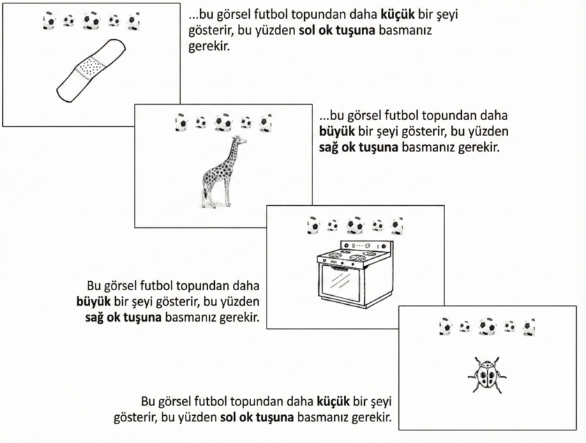

Testin sonraki bölümünde, görsellerde gösterilenleri tekrar
boyutlarına (bir futbol topundan daha küçük/daha büyük)
göre sınıflandırmanız gerekecek. Aşağıdaki örnek
prosedürü göstermektedir:

Bir sonraki sayfaya geçmek için lütfen sağ
ok tuşuna basın.